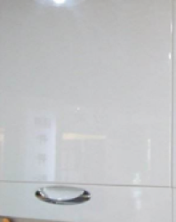
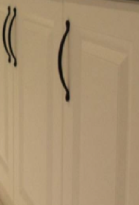
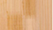
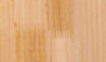
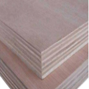
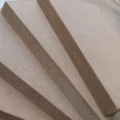
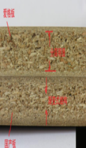

各种板材简介
柜门种类：

烤漆门
烤漆只是面层材料，真正衡量好坏的最重要因素是基层材料，之所以商家喜欢把面层材料作为板材来宣传是因为一般烤漆门的基层材料就是密度板或者刨花板，顾客如果听说是密度板门或者刨花板门显然不好抬高价格，选择此种门一定问清材质，不管是中密度板还是刨花板都宜选用品牌材质，否则大量胶水环保及稳定性都无法保证。

模压门（吸塑门）
有人说模压门比吸塑门好，是概念混淆的原因，模压只是对密度板的加工工艺，表面处理为吸塑（PVC），吸塑的好坏取决于膜的质量，以进口为佳，市场上的模压门多为密度板压出凹凸造型，然后吸塑成型。既然是密度板的基材，那还是一样关注密度板的品牌，否则密度板作为一种胶结材料环保及稳定性无法保证。那种欧洲田园风格几乎全是模压门，密度板以奥地利爱格板为代表，
芯板的性能决定了各种板材的性能，芯板种类：实木、指接板（集成材）、大芯板（细木工板）、多层板（胶合板）、密度板（纤维板）、刨花板（实木颗粒板）奥松板或欧松板防潮板-爱格板(奥地利)。
这么多名称既有种类的区别，也有装修行业混乱浑水摸鱼的故意糊弄业主的别有用心。以下笔者给大家介绍下板材的本质。某宝说什么橡木家具其实都是密度板贴橡木皮，这种语句一般放在最后边角处，希望业主一定留意这些细微处，否则上当了还说不出理由。
实木
实木有明显的整体木纹，并且有木材本身的香味。
指接板（集成材）

全实木条采用锯齿状接口，类似两手手指交叉用胶对接而成的单层板。（有三层的直接忽略，不如大芯板，表面有齿为明齿，侧面有齿而表面无齿为暗齿，暗齿好）
大芯板（细木工板）

中为实木芯材外胶合薄实木板，实木芯材有杉木、松木、马六甲板材、杨木、桐木。杉木最好，杂木最差，价格略高于多层板，其他芯材多层板价格略高。
大芯板+浸泡三聚氰胺树脂纸两面=生态板（双饰面板）
多层板（胶合板）

多层薄实木板胶合而成，9mm厚叫9厘板 12mm叫12厘板
大芯板或者多层板加个三聚氰胺面就是生态板，生态板的所谓生态性是相对的，因为三聚氰胺面层有阻止基层板材释放有害物质的作用。
多层板贴木皮还是多层板，做家具以大芯板，加木皮上油漆为好，生态板省事
密度板（纤维板）

分为高、中低三种，密度高自然强度大，但要选用品牌密度板，否则胶水质量无法保证环保。
密度板压出凹凸造型=模压板
刨花板（实木颗粒板）奥松板或欧松板、防潮板

刨花板的颗粒大小经过统一加工则成为实木颗粒板；
欧松板是刨下来的木片，区别就在这个片，交错布置压制而成，本质加工工艺与刨花板一样，区别就是保留木片纤维，抗拉能力更强，抗弯更好。以中间粗两边细的三层结构刨花板为优。
奥地利爱格生产的刨花板-爱格板
，爱格板有层的感觉，一般密度板是渐变的。品质较国产有明显的优势，不管是环保还是强度都由于国产，价格更高。国产大品牌有吉林森工露水河, 板材上都有标识，吉林森工是品牌，露水河是地名，两者合一起才是国内好的刨花板品质保证。
品牌商用的板材都会有授权证书。
贴三聚氰胺面则为广义的防火板
实木：
优点：木纹自然，环保性好
缺点：价格高，加工要求高，含水率控制不好易变形
适用：各种家具
指接板（集成材）:
优点：有实木的感觉，经济性比实木好
缺点：环保性比实木差，明齿指接处做清漆不美观（暗齿表面同实木一样），实木条一般用较低廉的松木、杉木、橡胶木，材质本身对含水率控制也要求高，否则易变形
适用：柜体，与大芯板差别不大，但有实木纹可刷清漆，大芯板稳定性更好
大芯板（细木工板）:
优点：不易变形，强度高，握钉力好，容易加工，用途广泛
缺点：甲醛含量一般比前两者高，芯材接缝处握钉力差
适用：用途广泛，各种基层，窗帘盒，家具，隔断
多层板（胶合板）:
优点：握钉力好，强度高，移动家具比大芯板好，不易受潮变形
缺点：环保性一般不如前者，
适用：装饰贴面板的基层板，家具背板，活动家具，橱柜
密度板（纤维板）:
优点：稳定性好，抗爆裂优于刨花板
缺点：泡水易坏，握钉力不及其他板材
适用：衣柜等不接触潮气的柜子，门套、窗套、踢脚线等，都会选用密度板，做成模压板，三聚氰胺（面）板
刨花板（实木颗粒板）奥松板或欧松板:
优点：握钉力比密度板好，刨花板防潮性好，价格最低廉，不宜变形，实木颗粒板算刨花板中好的。 缺点：抗弯性和抗压性较差，疏松，松动后甲醛量比密度板高。
适用：橱柜，家具
价格：
在相同品牌货等级情况下基本从上到下逐渐降低，但一般多层板比大芯板贵二十左右。密度板比刨花板贵20~40左右
环保：
在相同品牌货等级情况下基本从上到下逐渐变差，用胶逐渐增多，后两者都是胶结材料，密度板一般加工水平好于后者，家具只有中密度板，大芯板从用胶量上少于与多层板，前两者环保最优。实木及实木直接应该有天然的木香为佳，人造有胶板材应该以没有刺激性气味为底线。
芯板面层种类
贴实木皮油漆、烤漆面、三聚氰胺、吸塑 面层环保性来说前两者看品质，后两者无环保问题，这里没有说芯材的环保性